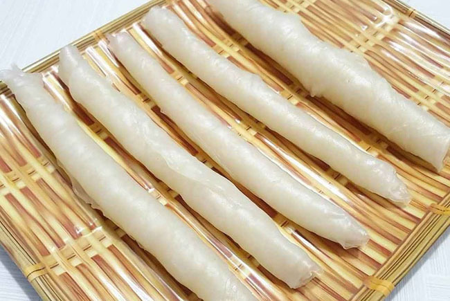

최근 유행하는 라이스 페이퍼 떡볶이
라이스 페이퍼 떡볶이 만드는 방법
1. 라이스페이퍼를 차가운 물에 적셔 3장에서 2장 겹쳐줍니다. 기포가 없어야 풀리지 않아요
기호에 따라 소세지나, 치즈도 안에 넣어줘도 좋아요!
2. 다 말아진 모양입니다.
3. 먹기좋은 크기로 2등분 정도 잘라줍니다
4. 일반 떡볶이 양념장을 만들고,
5. 모두 한곳에 넣어 적당히 끓여주면

6. 라이스 페이퍼 떡볶이 완성!!
떡볶이 조리 시범 영상